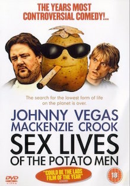

Juliette SCHEIDECKER
Seating on the couch
Trying to get the basics of ruby together with great budies at LeWagon while resting on an amazing couch
My favorite movies

|
Superbabies: Baby Geniuses 2 (2004)Superbabies: Baby Geniuses 2 a eu la rare distinction de détrôner temporairement l'indéboulonnable Manos: The Hands of Fate — le film que MST3K a à lui seul popularisé comme le "pire film de tous les temps officiel" — du sommer de la liste des 100 pires films d'IMDb. » et David Cornelius de efilmcritic s'interroge : « Pourquoi quelqu'un voudrait faire une suite d'un film universellement considéré comme un des pires jamais faits est un mystère pour les siècles à venir ? » |
|  |
Sex Lives of the Potato Men (2004)« Sex Lives est si nul qu'il m'a laisse bouche bée d'incrédulité... ce doit être une des pires comédies anglaises. » Henry Fitzherbert. « C'est difficile de trouver quoi dire à son sujet – ça revient à trouver les bons mots pour décrire un accident violent... Sex Lives of the Potato Men est sûrement la Brit-com la plus obscène depuis Confessions of a Window Cleaner (en), et sûrement la pire. » Catherine Shoard. ELle décrit le film comme « moins un film qu'un coupe-faim » |
Le Père Noël contre les Martiens (1964)Parce que les enfants martiens ne voit le Père Noël que grâce aux signaux télé envoyés de la Terre, leurs parents décident de l'enlever pour leur faire plaisir. Le film a d'abord été critiqué pour sa bizarrerie et ses mauvais effets spéciaux. Le film est cité parmi les dix pires films dans The Book of Lists et The Fifty Worst Films of All Time.Une rumeur de remake produit par David Zucker et avec Jim Carrey dans le rôle de Dropo a circulé. |